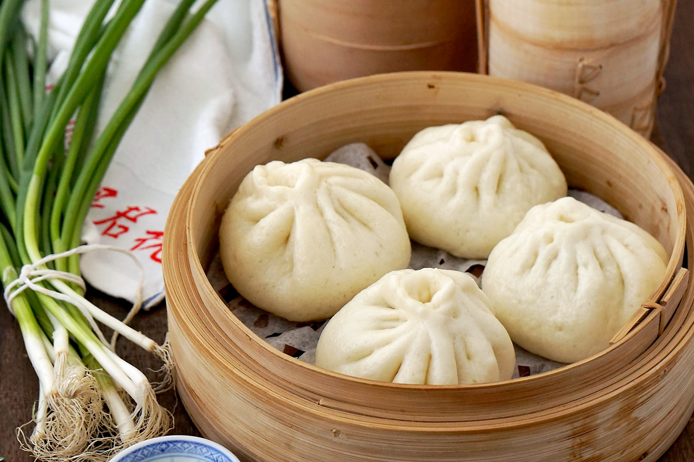

Pork Steamed Bao Buns

Making homemade baozi is actually quite easy and simple, it just takes a little time to let your yeast dough to rise, and you're ready to roll. Pleat, fill, steam, and enjoy!
Ingredients
For Bao Dough:
- 1 cup water
- teaspoons (6g) yeast
- 2 1/2 cups (381) bread flour
- 1/2 cup (78g) corn starch
- 5 tbsp (70g) sugar
- 2 teaspoons (12g) fine sea salt
- 2 tablespoons (28g) pork fat or butter
For BBQ Pork (Char Siu) Filling:
- 2 cups (320g) char siu
- 2 tbsp (30ml) cooking oil
- 2 shallots, finely diced
- 2 tablespoons (30ml) oyster sauce
- 1.5 tablespoons (22ml) soy sauce
- 2 teaspoon (8g) sugar
- 1/2 cup (118ml) water
- 2 tbsp (19g) flour
Instructions:
Bread Dough
- Mix yeast in water that is warmed up between 98 F or 36 c. Let sit for 10 minutes.
- In a stand mixer bowl, add the bread flour, cornstarch, sugar, and sea salt. Whisk together at first to incorporate all ingredients then add yeast and water mixture in the bowl gradually.
- If needed or too dry, add 1 tbsp of water but not too much. Add 2 tbsp or 28 g of softened unsalted butter or softened pork fat.
- Mix 8 to 10 minutes until smooth and looks cohesive, gently shape dough into a ball. In a greased bowl, put inside, damp towel, let rise for 1.5 hr or 2.5 times its size.
Char Siu Filling
- Cut charsiu into small pieces.
- In a medium saucepot, heat cooking in medium heat. Toss in shallots, then saute until translucent.
- Add sugar, oyster sauce, soy sauce, water, flour and let it thicken until it looks like a glaze.
- Fold in char siu. Remove from the sauce pot and let cool.
Shaping
- Shape dough into a long log, 18 in long. Ideally you would get 12-14 pieces of dough.
- Roll over the cut side. Do an 8 turn roll by rolling an eighth of the dough turning it, then rolling it again, leaving a thick center and a thin outside leaving a little bubble in the center for the filling. When rolled out with a rolling pin, the dough should be 4-5 inches in diameter.
- Add enough filling so that there is a half inch border around the whole bao.
- Pleat by pinching the dough then pressing it on the pinched edge repeatedly until the bao closes.
- Cut 3.5 in squares of parch paper. Put them below the bao so that they do not stick in steamer basket while cooking.
- Steamer basket setup: 2 inches of water and bring to a boil. Place steamer basket on top of the pot of boiling water without having the basket touch the water. 12 mins.
Original Recipe